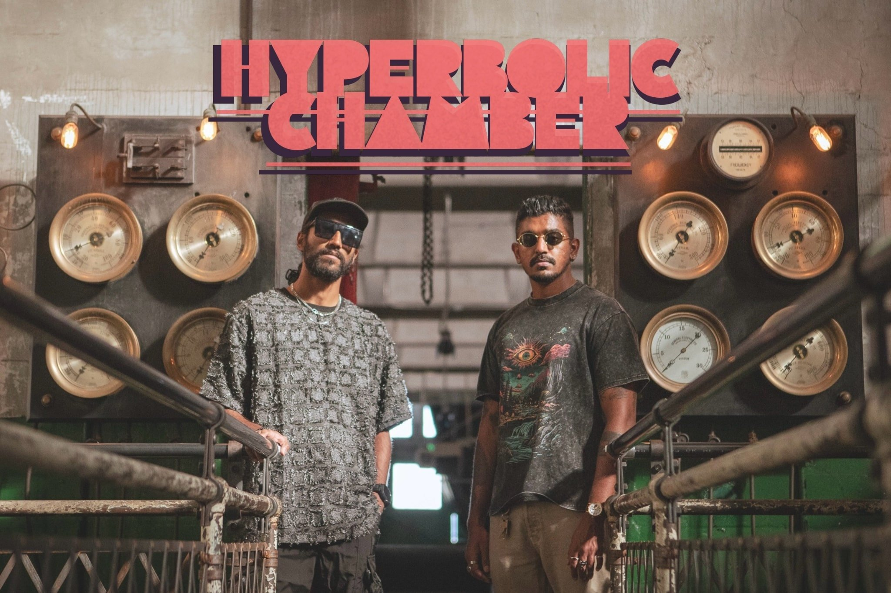

Core Belief
- Hyperbolic Chamber is a project rooted in sonic exploration - and behind the textures and frequencies, there's a personal journey.
- Everything in the Chamber begins and ends with the music.
Origins
The project started as a place to explore music freely and grew into a platform for sharing mixes, collaborations, and visual experiments.
Core Belief
It started with a simple, selfish idea: to create a platform where I could play music just to play music - a space for pure creative energy to flow, unrestrained.
It was a place of refuge where the mountains of music I had collected over the years could be experimented with. The Chamber became my podium to perform, to explore, to shape, and to share them with anyone willing to listen.
But it didn't stop there. The idea evolved organically - I wanted to open this space up, to feature other DJs, to offer them the same freedom I had while expanding my own musical horizons.
It was clear I needed PixelFilter by my side. A DJ, yes, but more importantly, a friend whose musical journey had always run parallel to my own. Our odyssey all goes back to one fateful night - a rave, a spark of something unspoken, a telepathic connection, and from that moment on, our path was set.
